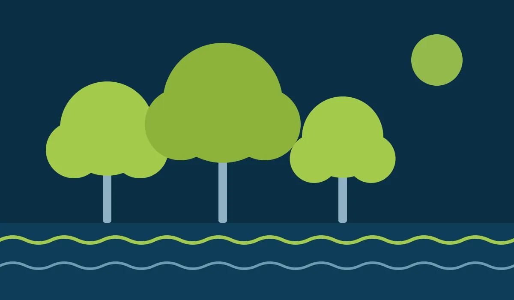

Poda técnica
Cortes no lugar certo, sem retirar mais do que a árvore suporta. Limpeza, levantamento e equilíbrio de copa.
Poda técnica, remoção de árvores, manejo de palmeiras e laudos em Cabo Frio, Búzios, Arraial do Cabo, São Pedro da Aldeia, Iguaba Grande, Araruama e Saquarema.

Cada árvore é avaliada antes do corte. Assim você evita multa, protege o imóvel e mantém a árvore saudável.
Cortes no lugar certo, sem retirar mais do que a árvore suporta. Limpeza, levantamento e equilíbrio de copa.
Supressão segura de árvores mortas, condenadas ou com risco de queda, com autorização municipal quando exigida.
Limpeza de folhas secas e cachos, avaliação do estipe e prevenção de queda de folhas em áreas de circulação.
Avaliação de risco e laudo para pedir autorização na prefeitura, inclusive nos casos da Lei 15.299/2025.
Seguimos a norma brasileira de manejo de árvores: técnica de corte, segurança da equipe e respeito à saúde da árvore em cada serviço.
Mande fotos da árvore e o endereço. Já dá para ter uma primeira ideia do serviço.
Visitamos o local quando necessário e passamos um orçamento claro, sem surpresa.
Orientamos o pedido à prefeitura e preparamos o laudo técnico quando ele é exigido.
Executamos a poda com segurança e deixamos o local limpo, com os resíduos recolhidos.